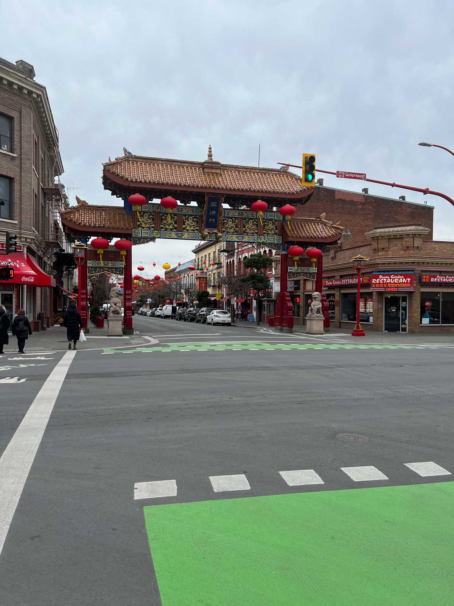
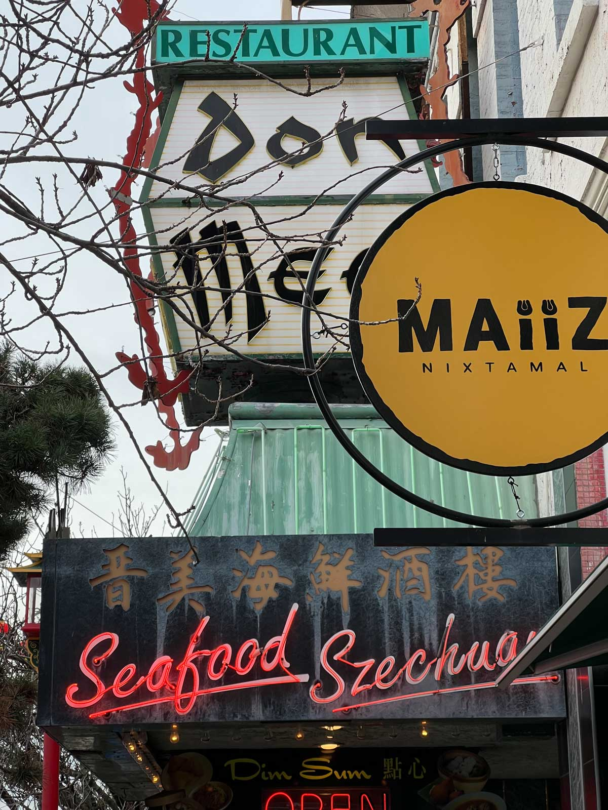

With only a backpack and a lack-of-sleep body, I began my one-day journey to Victoria from Richmond. It was a three-hour trip that gave me the leisure to take different transportation at once: bus, Skytrain, bus, ferry, then bus again. Besides my backpack, I had a vague goal of doing some kind of “research” in Victoria Chinatown and somehow getting something out of this trip for my studio class. Carrying this uncertainty, I arrived at the edge of Victoria Chinatown.
I got off the 70 bus at the city hall station near Chinatown. Like most Chinatowns I have been to, there’s a grand gate (Paai Fong, or Paifang) standing as it’s guiding the people, and tourists to enter the “wonderland” of Chinatown. This one at Victoria Chinatown is probably the smallest in scale among the gates I saw in Seattle, Chicago, Toronto and Vancouver—they are usually much taller. Walking through the gate, the “Chinatown atmosphere” hit me in my face with the creative and arts-and-craft style restaurant façades. A restaurant sitting behind the Chinatown gate caught my eye immediately with its giant lantern-like structure which holds the signage of the restaurant in Chop Suey font: Don Mee. Underneath, there’s a turquoise roof in traditional Chinese style with an array of neon lights. Not only is the roof covered with neon lights, but also almost every decorated piece extended from the building façades is outlined with neon light. Looking further downward, on the stained metal boards, it’s the restaurant’s name set in Chinese calligraphy: 晋美海鮮酒樓, and the slogan set in English script font “Seafood” and “Szechuan” (of course, English types are traced with neon strip light). The exaggerated lantern-shape signage, Chop Suey fonts, and neon signs are not only present at Don Mee Restaurant but can be seen everywhere on the main street in Victoria Chinatown. The scene takes me back to a Chinese restaurant in San Francisco Chinatown which I have never revisited because of the bad taste. The restaurant in San Francisco is what’s called American Chinese cuisine, meaning that the cooking style and taste of the dishes are modified to attract foreign tourists and white people. As I’m walking on the street in Victoria Chinatown, I couldn’t help to think that this place is a bad taste of Chinatowns.
As I kept walking, I noticed everything is covered in red paint—doors, light poles, trash cans, benches, and even the street meters. Red represents happiness and luck and it has always been the national colour of China. However, along with the red paint, a repetitive slogan can be spotted on trash cans and street banners. It says, “Canada’s Oldest Chinatown”, in both English and Chinese (加國最古老的華埠). I know what they’re trying to do: the dominant red colour palette and the slogan typeset in Song Ti Chinese are the main elements in the identity design of Victoria Chinatown. With this discovery, I paid more attention to any design elements on the street. I quickly noticed that there’re more Chop Suey fonts used by stores and restaurant owners, and I even found them on the street signs. Chop Suey fonts are a particular genre of English typeface which contain letters that are usually composed of only two simple strokes in Chinese calligraphy (there’re eight of them). They’re often seen as a “racist” iconography against the Chinese community (the historical context and cultural background of Chop Suey fonts are complicated, I will elaborate later in the article). The identity design also reaches the alleys. Fan Tan Alley, sitting in between brick walls on the opposite side of Don Mee Restaurant, is transformed and commodified into a hallway full of stores. I love the experience of walking through alleys in San Francisco Chinatown because sometimes I’d get nervous that some chief from the restaurants (they usually hang out in the alleys during lunch break) would shoo me away; or, I’d be surprised to find a home-run florist shop. Slowly going through the alley, I enjoy seeing the well-designed merchandise specifically produced for Victoria Chinatown. However, I also missed the breath of life of the local Chinese community.
The uniformity and the intentional placement of those visual elements have taken away the liveliness of a community. Unlike Chinatowns in New York or San Francisco where a large population of Asian American and new coming Chinese immigrants live, Victoria Chinatown seems to be a billboard, of which the image is well curated, designed and displayed. As I walked out from one of the alleys called Dragon Alley (飛龍巷), I couldn’t help myself questioning: is this Chinatown dying?
I typed out this question in the Notes app on my phone while taking the 70 bus back to the ferry. Of course, I quickly realized the word “dying” is just a metaphor, because this Chinatown wasn’t the image I was used to seeing in the places I lived in the past. Still, I tried to answer this metaphorical question by looking into the visual language appealed to in the urban landscape of Victoria Chinatown. Aforesaid, Don Mee restaurant’s architectural aesthetic takes me back to San Francisco because the intention of such aesthetic was not for interesting Chinese customers, but for white people. Not surprisingly, the architectural aesthetic originated in San Francisco. After the 1906 San Francisco earthquake, many buildings were destroyed in Chinatown. The owners of those destroyed properties (of course they were white) needed to rebuild Chinatown which was a good opportunity to reimagine a new Chinatown for San Francisco to attract more tourists and business. A California-born Cantonese man named Look Tin Eli who was the founder of Sing Chong Bazaar, one of the largest tourist-oriented businesses at the time, persuaded the Chinatown property owners to rebrand Chinatown in the exotic and “oriental style” architecture. With this imagination of an “oriental” Chinatown, Look hired an architect who was never been to China, to design architecture in Chinatown. Hence, the pagoda-topped buildings with upturned eaves and a red-green-gold colour palette were built, and they’re still standing in the heart of San Francisco Chinatown. Going back to Don Mee restaurant in Victoria’s Chinatown, we can find a lot of shared design languages of the architectural aesthetic envisioned by Look and other white property owners. It’s hard to tell that the owner of Don Mee restaurant preserves this “oriental” style, which has no connection with East Asian culture or history, to showcase an offended image for their business. However, the preservation shows us, Chinese migrants, that our ancestors' struggle and resistance in the politics of white men.